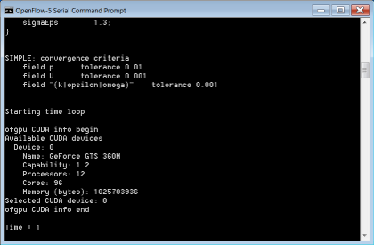

GPU v0.2 Linear Solver Library for OpenFOAM
For the latest version of ofgpu for OpenFOAM visit "GPU v1.1 Linear Solver Library for OpenFOAM".
Jan. 17, 2012: Updated instructions for OpenFOAM 2.1.x
ofgpu v0.2 is the latest version of our free GPL library that provides GPU (sometimes referred to as GPGPU) linear solvers for OpenFOAM® v2.1.x. Sponsored by the Microsoft DPE team, the library targets NVIDIA CUDA devices on Windows, Linux, and (untested) Mac OS X. While this effort is still in the experimental stage, GPU acceleration holds the promise of providing significant speed up at relatively low cost and with low power consumption compared to other alternatives. If you want to try our ofgpu library with OpenFOAM then we recommend that you use either a dedicated (i.e., not displaying graphics) high-performance NVIDIA graphics card or a TESLA card.
OpenFOAM on Windows using ofgpu
OpenFOAM GUI
Are you looking for a GUI driven, integrated simulation environment with GPU support for Windows and Linux with NVIDIA CUDA devices incorporating a selection of the RANS OpenFOAM solvers and various import/export filters?

Background
In our ofgpu library we use the Cusp library's Krylov solvers to produce equivalent GPU (CUDA) versions of the standard OpenFOAM linear solvers:
- PCG - Preconditioned conjugate gradient solver for symmetric matrices (e.g., p)
- PBiCG - Preconditioned biconjugate gradient solver for asymmetric matrices (e.g., Ux, k)
We also have support in ofgpu for the Cusp preconditioners:
- no
- diagonal
- smoothed_aggregation - equivalent to Algebraic Multi-Grid (AMG)
- scaled_bridson_ainv
- bridson_ainv
- nonsym_bridson_ainv
Prerequisites
- You are familiar with the OpenFOAM build process
- You are familiar with CMake
- You have a CUDA-capable NVIDIA device, such as a TESLA C2075
Preparation
Install and test:
- Latest NVIDIA graphics driver
- Latest CUDA Toolkit (v4.0, including Thrust) and GPU Computing SDK
- Cusp v0.2.0 - sparse linear algebra library
- CMake - cross platform make
- OpenFOAM 2.1.x source distribution on Linux - following "OpenFOAM 2.1.x on Windows 64-bit with MS MPI". Note that these modifications for Windows also work for Linux
Build Procedure
This build procedure assumes single precision.
- Download our free GPL licensed ofgpu library [last update Sept. 15, 2011 to v0.2].
- Configure and generate the build system for ofgpu with CMake, Set the
CMAKE_INSTALL_PREFIXvariable to<ofgpu-root>/install - Build ofgpu
- On *nix systems
make installand create the symbolic link:ln -s <ofgpu-root>/install/release/lib <ofgpu-root>/install/lib - For Windows you will need to build ofgpu natively using Visual Studio and then transfer ofgpu.dll and ofgpu.lib to your Linux system for cross compiling. Place your natively compiled Windows files in
<ofgpu-root>/install/win/libon your Linux system.
- On *nix systems
- Patch your OpenFOAM source with our CUDA modifications. Note that this is the same source code patch that adds Windows support for OpenFOAM 2.1.x.
chmod ug+x <OpenFOAM-root>/src/gpu/Allwmake- Build OpenFOAM in the usual manner, but with the addition of the environment variables:
WM_GPU='CUDA'CUDA_ARCH_PATH=<ofgpu-root>WM_PRECISION_OPTION=SP
Note that single precision is required. Double precision is untested.
The build process will produce the following 2 new OpenFOAM libraries:
$(WM_PROJECT_DIR)/platforms/<platform>/lib/cuda/[lib]gpu.[so|dll]$(WM_PROJECT_DIR)/platforms/<platform>/lib/gpuless/[lib]gpu.[so|dll]
Under Windows you will need to have the $(WM_PROJECT_DIR)/platforms/<platform>/lib/cuda directory in your executable path to use the library.
Example Case
For an example of a GPU-enabled case try pitzDailyGpu.
The GPU library is loaded in <case>/system/controlDict with:
functions
{
cudaGpu
{
type cudaGpu;
functionObjectLibs ("gpu");
cudaDevice 0;
}
}
As an example the p and U|k|epsilon linear solvers in the <case>/system/fvSolution file are modified as follows:
p
{
solver PCGgpu;
preconditioner smoothed_aggregation;
tolerance 1e-06;
relTol 0.01;
}
"(U|k|epsilon)"
{
solver PBiCGgpu;
preconditioner diagonal;
tolerance 1e-05;
relTol 0.1;
}
Notes
OpenFOAM is a registered trademark of OpenCFD and is unaffiliated with Symscape.
Feedback
Questions? Ideas? Problems?

Comments
Would require a complete rewrite
It wouldn't be a port, it would require a complete rewrite to make ofgpu compatible with OpenCL.
ofgpu is based on the CUDA libraries THRUST and CUSP. If these libraries were ported (which would equate to a complete rewrite) to OpenCL then that would make a rewrite of ofgpu viable.
The corresponding libraries are not CUSP and THRUST but...
...ViennaCL (GPU solver library) and VexCL (template library)
As an example, the OpenCl version of odeint replaces THRUST with VexCL:
... odeint now supports GPU computations both with CUDA by using the Thrust library and OpenCL by using VexCL. This allows us to compare the performance of the two solutions.
Number of GPU cores
Hi,
Congrats on this great work. I have successfully installed and run some cases.
I was wondering, whether is it possible to control number of gpu cores on which ofgpu is run? Or does the solver takes up all the cores by default?
No control over GPU core number
No there is no control over the GPU cores used. Why would you want to limit the core number? If you don't max the core number you are wasting compute effort.